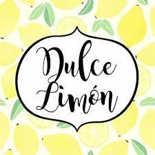

Dulce Limón es un emprendimiento iniciado por Profesionales Gastronómicos, inspirado en una Pastelería Artesanal contemporánea, que en un principio se especializó únicamente en tortas, pero hoy, cuenta con una gran variedad de Minicakes, Brownies, Alfajores, Cup Cakes, Cake Pops, Petit fours y más. Su objetivo es ofrecer un producto de alta calidad, excelente presentación, pero con el sabor de lo casero.
Influenciada por lo que en otras partes del mundo son ya íconos de la tradición pastelera (macarons, mooncakes, wagashis, canelés, y otros), su pastelería apela en primera instancia al puro placer estético, para luego dar paso a la devoción infantil por lo sencillamente rico.
Con amplitud de ingredientes, Dulce Limón propone una pastelería versátil: la personalización de sabores y presentaciones es un desafío que se toma muy en serio. Especialmente en eventos, el tándem cocina-diseño y la adaptación al contexto son objetivos que nunca se pierden de vista.
Infantil, rico, delicado, intrigante, Dulce Limón surge con la intención de contagiar las ganas de algo nuevo.
